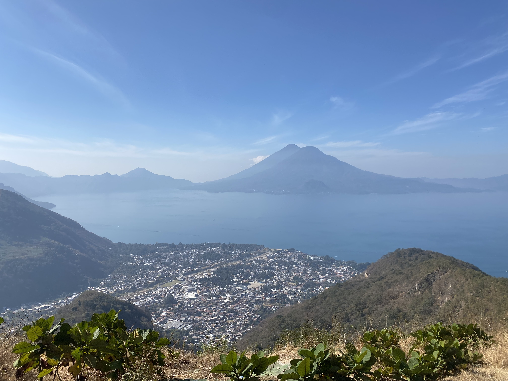
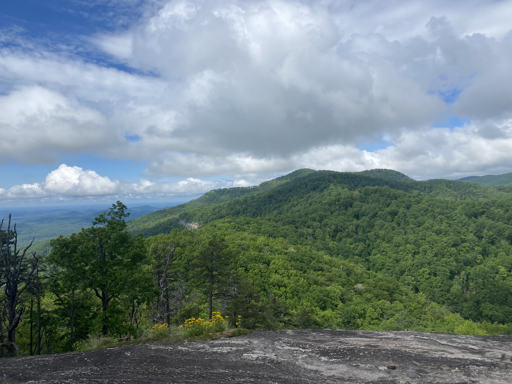
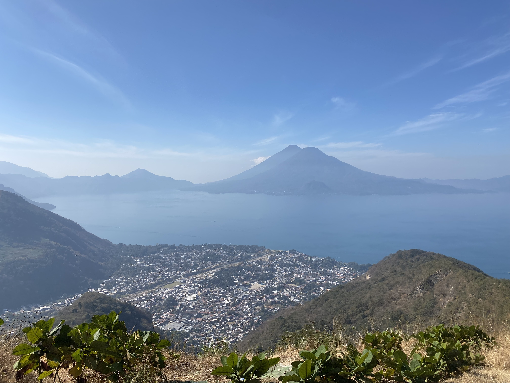
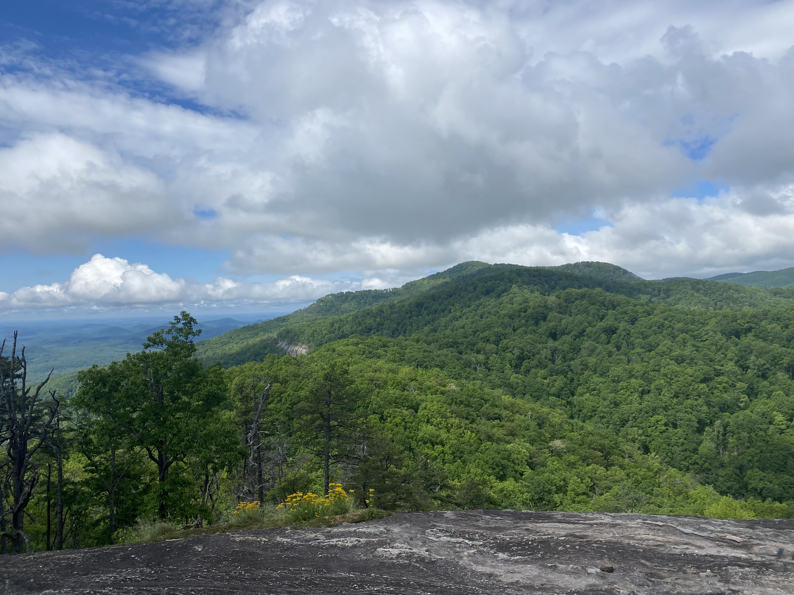

About Me
I am from Belmont, North Carolina and am currently 19 years old. I have two siblings and am the youngest in my family. A few fun facts about me are that I love to go running, the beach is my favorite place in the world, and I have a dog nephew named Milo. Also, I really enjoy going to new places and I hope to travel more this year.
I am currently a sophomore at the University of South Carolina majoring in biological sciences, with a minor is psychology. As a student here, I am a member of several organizations and clubs that make me feel involved in the school community. I am a part of an Honors Peer Mentor Program, in which I act as a mentor for a few incoming freshman to help them adjust to college life. I also volunteer at the Gamecock Community Shop on Mondays and I recently joined a committee within the volunteer program to help with inventory for the Gamecock Pantry. For a more fun activity, I am a part of a spikeball club that plays twice a week.
See More...My Future Career Plans
In the future, I aspire to become a Physician Assistant and am interested in several specialties. Some of these include pediatrics, dermatology, and oncology. In order to apply to PA school, I must complete many pre-requisites and acquire hours working in a healthcare environment with patients. Many of the required courses are included as a class in my major, however some like Advanced Human Anatomy are elected to be taken. Getting all of the requirements fulfilled is tedious work, but well worth it.
I am also a member of the Pre-Physician Assistant Student Association at South Carolina. As a part of this student organization, I am able to hear from speakers and gain an understanding of the PA profession, as well as hear about the experiences of students that are currently in PA school. An amazing opportunity offered by this association is the chance to go on a medical volunteer trip to Guatemala. This year, I will be attending with the chosen group and will simultaneously be accumulating healthcare hours for PA school applications later on. Overall, I am just passionate about healthcare and want to make a difference as a PA.
See More...